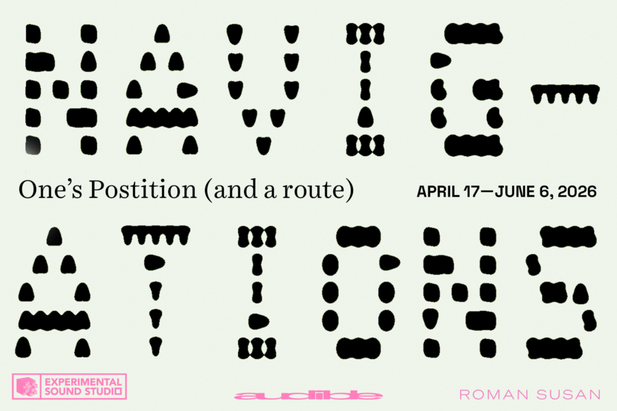

One’s Position (and a route)
Opening Friday, April 17 from 6-9 PM
Activations Saturdays from 1-4 PM
If you were going to guide someone around where you live, where would you take them? This exhibition is a showcase of projects in and about public space. Each week, a different artist is featured on the Audible Gallery sound system, amplifying work that is taking place across the City.
One’s Position (and a route) includes elements of:
Dear Human by Christa Donner at West Ridge Nature Park
What is a Tree? by John-Michael Korpal at Warren Park
1-833-NATR-XXX by Eliza Fernand via Toll-free Hotline
Shore Land by JeeYeun Lee on Lakefill into ᒥᓯᑲᒥ mille tendresse-mille fleurs by J. Kent as Worn Garments